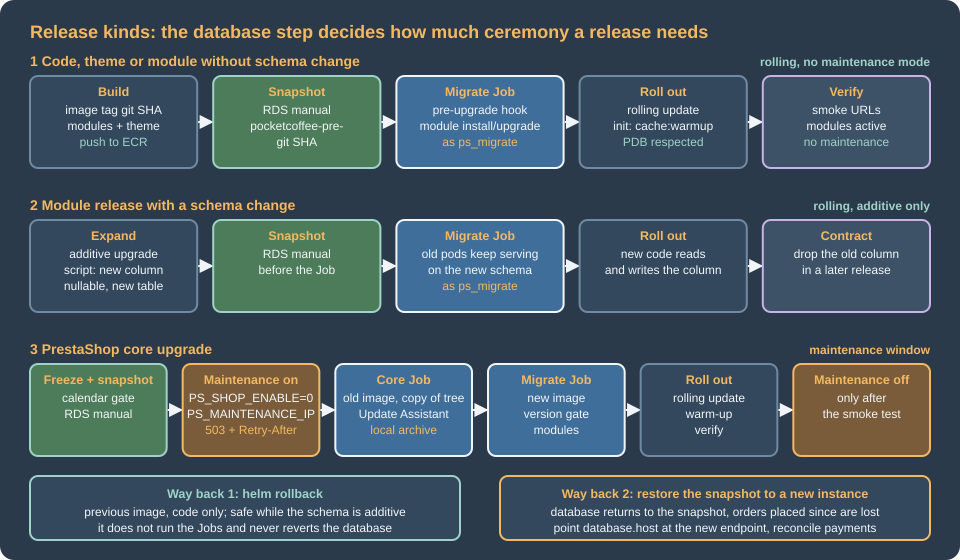

Cloud: Releases and Upgrades
|
This content was generated with the assistance of AI and should be verified against the official documentation before being relied on in production. |
This page was written against PrestaShop 9.2.0 (the version that the other pages of this section use), the Update
Assistant (autoupgrade) 7.6.6, PHP 8.5 in the container image, MySQL 8.4 on Amazon RDS, Kubernetes 1.36 or 1.37 on Amazon
EKS and Helm 4.3. It was checked on 2026-10-29. It names no prices: the cost drivers it mentions (snapshots, a second
database for a rehearsal or a blue/green run) are things to measure, not figures to copy.
PrestaShop’s own update story assumes one writable server: the Update Assistant downloads a release, overwrites the files
of the running shop, runs SQL files, and keeps a backup beside the shop in <admin-dir>/autoupgrade/. On a cluster every
word of that sentence is a problem: the files are an image that must not change, the shop is a set of pods that come and
go, and the backup folder would live in a pod that is replaced a minute later. The release pipeline therefore does what the
WordPress and WooCommerce pages of this site already do (see
Releases, Upgrades and Autoscaling on Kubernetes
and Cloud: Releases and Database Updates): build an image,
change the database once in a Job, and only then replace the pods. This page does not repeat that pipeline. It adds what
is specific to PrestaShop: where the schema changes come from, how a core upgrade fits an immutable image, what the
per-node caches do to a release, and what maintenance mode means when every request may land on a different pod.
The running example is Pocket Coffee with the names of
Cloud: Reference Architecture: cluster pocketcoffee-prod,
namespace pocketcoffee, release pocketcoffee, chart pocketcoffee-prestashop (helpers pc.*), ECR repository
pocketcoffee/prestashop, RDS instance pocketcoffee-prod with the users ps_app and ps_migrate, the back office under
/admin-pocketcoffee/, the modules pocketcoffee_roast, pocketcoffee_pay and pocketcoffee_lot, and the workloads
pocketcoffee-web, pocketcoffee-cron and pocketcoffee-migrate, in the account 123456789012 and the region
eu-west-1.

What a release changes in a PrestaShop shop
PrestaShop has no single "database update" like WooCommerce’s wp wc update. The schema and data change in three
different places, and each has its own trigger:
| Kind of release | What changes in the database | How it is triggered |
|---|---|---|
Code only: a theme, a module without upgrade scripts, a configuration file |
Nothing. |
Nothing. The image is replaced and the pods roll. |
A module with a new |
Whatever the scripts |
|
PrestaShop core: a patch, a minor or a major version |
The SQL and PHP scripts of the Update Assistant for the target version, the value |
The task |
Two things in that table are different from what a single server hides.
Core upgrade scripts are not in the core. I looked for them in the 9.2.0 source tree and there is no upgrade folder under
install-dev and no console command that applies them. They live in the upgrade/sql and upgrade/php folders of the
autoupgrade module, and its class CoreUpgrader reads them from there; at the end of the database step it sets
PS_VERSION_DB to the destination version. The only way to run a core database upgrade is therefore the Update Assistant,
which also replaces the files. The existing page
Testing, Upgrades and Addons describes the module and its
commands (update:check-requirements, update:start, backup:create); this page only adds what the cluster changes.
The PHP code and the database must agree. PS_VERSION_DB is written by the installer (Install.php sets it to the
installed version) and by the update; the Update Assistant refuses to start when it does not equal the version of the code
(SHOP_VERSION_NOT_MATCHING_VERSION_IN_DATABASE in its UpgradeSelfCheck). Nothing in a plain PrestaShop boot checks it,
so a new image started against an old database does not stop with a message: it runs, and fails where the schema differs.
The pre-upgrade Job below turns the comparison into a gate.
Why a core upgrade is an image rebuild plus a database upgrade
The Update Assistant is an in-place tool. Its tasks, in the order of its documentation, are UpdateInitialization,
Download (or Unzip for a local archive), DownloadModules, UninstallModules, UpdateFiles, UpdateDatabase,
UpdateModules, CleanDatabase and UpdateComplete. UpdateFiles copies the files of the new release over the shop; the
tool writes its working files, logs and backups below <admin-dir>/autoupgrade/; its requirements check fails when
directories that it must change are not writable. Run on the pods of the cluster this would mean:
-
A different tree on every pod. One pod would be updated, the other replicas would keep the old files, and the next restart would bring the image’s old files back. The image is the only copy of the code that all pods share.
-
A read-only root filesystem. The production image of this section is meant to run with a read-only root filesystem (see Cloud: Production Container Image); the tool’s requirements check would block the update.
-
Backups on a disposable disk. The tool’s backup goes to
<admin-dir>/autoupgrade/backup, in the pod. The backup that counts for a cluster is the RDS snapshot, which is taken outside the pod and restored without the pod. -
A web request as the driver. The back-office update runs for a long time in
php-fpmbehind a load balancer with timeouts; the CLI does not have that limit, which is why the CLI is the interface to use (the page above says the same for pipelines).
So the new code arrives the way all code arrives: a new image, built from the new base image
(prestashop/prestashop:<new-version>-fpm) plus your modules and theme. What is left for the Update Assistant is the part
that nothing else can do, the database. That gives this plan:
-
Build the image of the new version. It contains the files; nothing else will change them.
-
Run the core upgrade once, in a Job, against the production database, using a disposable copy of the old tree as the place where the tool writes its files. The copy is thrown away with the Job; the database changes stay.
-
Run the migrate Job of the new image, which checks that the version in the database is now the version in the image and upgrades the modules.
-
Roll out the new pods.
The second step is the delicate one, and it is not a procedure that PrestaShop documents or supports. It follows from reading
the source of the module (the tool derives its root from the location of its own bin/console, so a copy of the tree
works as a root, and it runs the database scripts through Db::getInstance() with the connection of that tree’s
app/config/parameters.php), and I did not run it: the module is not part of the 9.2.0 Docker image and I did not have an
older shop to update. Rehearse it on staging, restored from a production snapshot, before relying on it; the rehearsal is
the same workflow with a different cluster. The alternatives, each with its own cost, are in Blue/green and rolling releases.
The pre-upgrade Job for modules
The routine release changes modules and, sometimes, the core in a patch. The Job for it is the PrestaShop counterpart of the
WordPress migrate Job: a Helm hook that runs before the new revision’s pods, with the new image and a database user that
may alter tables. The script lives in the image (it is part of the release, versioned with the code) and the Job only
starts it.
#!/usr/bin/env bash
# Release step of Pocket Coffee: run by the pre-upgrade Job as the migration database user.
set -euo pipefail
cd /var/www/html
console() { php -d memory_limit=-1 bin/console --env=prod "$@"; }
# 1. The code of this image and the database must be at the same PrestaShop version.
code_version="$(php -r 'require "vendor/autoload.php"; echo PrestaShop\PrestaShop\Core\Version::VERSION;')"
db_version="$(console prestashop:config get PS_VERSION_DB | sed -n 's/.*PS_VERSION_DB=\([^[:space:]]*\).*/\1/p')"
echo "PrestaShop code ${code_version}, database ${db_version}"
if [ "${code_version}" != "${db_version}" ]; then
echo "The database is not at the version of this image: run the core upgrade first (migrate.core.enabled=true)." >&2
exit 1
fi
# 2. Install new modules and upgrade installed ones. The command exits 0 even when an action fails,
# so the success message is the check. "install" on an installed module performs the upgrade.
read -r -a modules <<<"${PC_MODULES:?set PC_MODULES to the module names of the release}"
for module in "${modules[@]}"; do
output="$(console prestashop:module install "${module}" 2>&1)" || { printf '%s\n' "${output}" >&2; exit 1; }
printf '%s\n' "${output}"
if ! grep -Fq "action on module ${module} succeeded" <<<"${output}"; then
echo "Module ${module} was not installed or upgraded" >&2
exit 1
fi
done
# 3. Every module of the release must be installed and enabled.
active="$(console prestashop:module:list --active --simple)"
for module in "${modules[@]}"; do
grep -Fxq "${module}" <<<"${active}" || { echo "Module ${module} is not active" >&2; exit 1; }
done
# 4. Report the drift between the entities and the database; this is a report, not a gate.
console prestashop:schema:update-without-foreign --dump-sql 2>&1 | sed -n '1,40p' || true
echo "Release step finished"What each step does, and what I read in the source to justify it:
-
The version gate.
Core\Version::VERSIONis the version constant of the code (9.2.0in the 9.2.0 tree) andprestashop:config getprints[OK] NAME=value, which thesedextracts (the format is the one shown on the page Console Commands). The command also proves that the Job reaches the database with the migration user and that the shop is installed. On the very first release the Job should not exist yet: the first install is a different Job (see Cloud: EKS Infrastructure and Helm Deployment). -
installinstead ofupgrade. InModuleManager,install()callsupgrade()when the module is already installed, whileupgrade()throws when it is not. Usinginstallfor every module of the release makes the step repeatable and lets a release add a module. Theupgrade/upgrade-x.y.z.phpscripts run only for versions newer than the stored one, and only when theversionproperty of the main class was raised (see Module Upgrades, Overrides and Decoration); forgetting to raise it is the most common reason for "the Job succeeded and nothing changed". -
The exit status.
ModuleCommand::execute()returns0after every action, and a failure only prints a block that starts with "Cannot upgrade module" or "Cannot install module". The script therefore reads the output; the message "<Action> action on module <name> succeeded." is the success case. The existing console page makes the same warning. -
The
--dump-sqlreport never applies anything (without--forcethe command prints the statements). A fresh 9.2.0 install already showed differences, so the report is for people to read in the Job log; make it a gate only after you have a list of the accepted differences. Applying it with--forcein a release is a decision for a snapshot and a maintenance window, as that page says. -
No cache commands.
cache:clearin the Job would clear the Job’s ownvar/cache, which is thrown away, and none of the web pods'. The caches are the subject of Cache warm-up per pod.
{{- if .Values.migrate.enabled }}
apiVersion: batch/v1
kind: Job
metadata:
name: {{ .Release.Name }}-migrate
labels:
{{- include "pc.labels" . | nindent 4 }}
annotations:
"helm.sh/hook": pre-upgrade
"helm.sh/hook-weight": "0"
"helm.sh/hook-delete-policy": before-hook-creation,hook-succeeded
spec:
backoffLimit: 0
activeDeadlineSeconds: {{ .Values.migrate.timeoutSeconds }}
ttlSecondsAfterFinished: 3600
template:
metadata:
labels:
app.kubernetes.io/name: {{ include "pc.name" . }}
app.kubernetes.io/instance: {{ .Release.Name }}
app.kubernetes.io/component: migrate
spec:
restartPolicy: Never
serviceAccountName: {{ .Release.Name }}-prestashop
automountServiceAccountToken: false
securityContext:
runAsNonRoot: true
fsGroup: 33
seccompProfile:
type: RuntimeDefault
containers:
- name: migrate
image: {{ include "pc.image" . }}
command: ["/usr/local/bin/pc-migrate"]
securityContext:
{{- include "pc.containerSecurity" . | nindent 12 }}
runAsUser: 33
runAsGroup: 33
envFrom:
{{- include "pc.envFrom" . | nindent 12 }}
env:
{{- include "pc.dbEnv" (dict "root" . "user" .Values.database.migrateUser "key" "DB_PASSWORD_MIGRATE") | nindent 12 }}
- name: PC_MODULES
value: {{ join " " .Values.migrate.modules | quote }}
resources:
requests: { cpu: 250m, memory: 512Mi, ephemeral-storage: 512Mi }
limits: { memory: 1Gi }
volumeMounts:
{{- include "pc.codeMounts" . | nindent 12 }}
volumes:
{{- include "pc.volumes" . | nindent 8 }}
{{- end }}Source: Helm Docs: Chart hooks
This file replaces the simpler job-migrate.yaml of the Helm page, which runs prestashop:module upgrade inline; the two share the
helpers and the hook annotations. The values it reads are database.migrateUser: ps_migrate, migrate.timeoutSeconds: 1800 (a value this page adds to
the chart) and migrate.modules: [pocketcoffee_roast, pocketcoffee_pay, pocketcoffee_lot]. The password of ps_migrate is the password of the
Secrets Manager secret pocketcoffee/prod/prestashop-db-migrate. It reaches the Job through the ExternalSecret pocketcoffee-secrets of the chart, as the
Secret key DB_PASSWORD_MIGRATE, and the helper pc.dbEnv sets DB_USER and DB_PASSWD of the container to the migration user and that password.
The ExternalSecret is an ordinary object of the release, not a hook, so on the very first release install the chart once with migrate.enabled=false
(a pre-upgrade hook does not run on an install anyway), let the Secret appear, and use the Job from the second release on. DB_USER and DB_PASSWD are the
names that parameters.php reads (see the image page), and the Job leaves host, database and table prefix to the ConfigMap, because an explicit env
entry wins over envFrom.
Three points about the Job’s pod:
-
Its user may alter tables; the web pods' user may not.
ps_migratehas the DDL privileges,ps_apponly the data privileges, as on the database page of this section (Cloud: Managed Database (RDS and Aurora)). A module’s upgrade script that callsALTER TABLEthroughDb::getInstance()uses the connection ofparameters.php, so it runs asps_migratein the Job and would fail asps_app, which is exactly the purpose. A script that fails in the Job fails the release before a single pod is replaced. -
Only the writable paths of the web pods are writable. The Job mounts what
pc.codeMountsandpc.volumesgive every workload:/tmp, the per-podvar/cache,var/logsand export folders (the tree of 9.2.0 keepsSymfonyRequirements.phpandclass_stub.phpdirectly invar/, so the subfolders are mounted, notvar/as a whole), and the shared folders of the EFS claimpocketcoffee-shared. A module that writes elsewhere during an upgrade (for exampleoverride/,translations/or its own folder) fails on the read-only filesystem, which is again the purpose: such a write belongs in the image build. -
The Job connects to RDS, not to a pod. It writes to the shared volume only if a module script writes into
img/.
When the upgrade script is not enough
An upgrade script is plain PHP that runs once, with the connection of the shop; PrestaShop does not wrap it in a
transaction (MySQL commits DDL statements implicitly anyway). A script that fails halfway leaves a half-migrated schema,
and a Job retry runs the script again from the start. Write the scripts so that every statement is repeatable
(ADD COLUMN IF NOT EXISTS is MariaDB syntax, not MySQL’s: check the column in information_schema first, or use
Db::getInstance()->executeS() to test for it), keep backoffLimit: 0 so that a failed Job stays visible instead of
repeating, and rehearse every release against a restored snapshot. The snapshot of the next section is what you fall back
on when a script has half-applied.
Core upgrades as a Job
A release that moves PrestaShop itself (for example from 9.2.0 to a later patch or minor release) adds one hook Job before the migrate Job: the core Job. It runs the Update Assistant from the CLI against a disposable copy of the old tree, with the archive of the new release, and exits. The pieces:
-
The old image runs it. The Update Assistant refuses to start when the code and
PS_VERSION_DBdisagree, and at that moment the database still has the old version, so the Job must use the image that is running now (helm get valuesgives its tag). The new image only supplies the archive. -
The module must be in the old image. It is not in the official image; add
modules/autoupgrade(it does not need to be installed, only present) to your image from the first release on, together with itsvendorfolder, so that every image can serve as the "old" one later. The two scripts of this section (pc-migrateandpc-core-upgrade) must be in the image from the first release for the same reason. -
The archive and its XML come from the new image. The
localchannel reads a.zipand its.xmlof the same version from<admin-dir>/autoupgrade/download/. The image build puts the verified pair in/opt/prestashop-release/. Where PrestaShop publishes these files is something to check at build time: the README of the module says "the GitHub releases of the core", but the 9.2.0 and 9.1.5 releases showed no attached assets through the GitHub API when I looked on 2026-10-29, and the Docker image build resolves its download URL through a distribution API (prestashop_docker/distribution_api.pyin the Docker repository). I did not verify how to obtain the XML. -
Maintenance mode must be on. The check
MAINTENANCE_MODE_DISABLEDof the tool fails unless the shop is deactivated and a maintenance IP is set (the check is written differently for a multistore installation). The workflow turns it on first, see Maintenance mode on a cluster.
#!/usr/bin/env bash
# Core upgrade step of Pocket Coffee: runs in a Job from the OLD image, in a disposable copy of the tree.
set -euo pipefail
admin_dir="${PS_ADMIN_DIR:?set PS_ADMIN_DIR to the renamed admin folder}"
zip_file="${PS_RELEASE_ZIP:?set PS_RELEASE_ZIP}"
xml_file="${PS_RELEASE_XML:?set PS_RELEASE_XML}"
work=/work/shop
# The tool writes into the tree it lives in: give it a copy and keep the image untouched.
mkdir -p "${work}"
cp -a /var/www/html/. "${work}/"
cd "${work}"
mkdir -p "${admin_dir}/autoupgrade/download"
cp "/release/${zip_file}" "/release/${xml_file}" "${admin_dir}/autoupgrade/download/"
autoupgrade="php -d memory_limit=-1 modules/autoupgrade/bin/console"
${autoupgrade} update:check-requirements --channel=local --zip="${zip_file}" --xml="${xml_file}" "${admin_dir}"
${autoupgrade} update:start --channel=local --zip="${zip_file}" --xml="${xml_file}" \
--regenerate-email-templates=0 --disable-all-overrides=1 --uninstall-incompatible-modules=0 "${admin_dir}"
# The version in the database is the proof that the database step ran.
db_version="$(php -d memory_limit=-1 bin/console --env=prod prestashop:config get PS_VERSION_DB | sed -n 's/.*PS_VERSION_DB=\([^[:space:]]*\).*/\1/p')"
echo "PS_VERSION_DB is now ${db_version}"The options are those of the page on the Update Assistant. The module declares --regenerate-email-templates,
--disable-all-overrides and --uninstall-incompatible-modules with a required value (1 or 0) in its source, which
differs from the flag-like way the README table presents them; I used the form of the source. update:start returns
0 or 1 (ExitCode::SUCCESS and ExitCode::FAIL), so set -e makes the Job fail when the update fails. Its
default is to chain the tasks automatically, and the chaining runs php again with the next --action, which works in the
copy because the module finds its root from its own location.
{{- if and .Values.migrate.enabled .Values.migrate.core.enabled }}
apiVersion: batch/v1
kind: Job
metadata:
name: {{ .Release.Name }}-migrate-core
labels:
{{- include "pc.labels" . | nindent 4 }}
annotations:
"helm.sh/hook": pre-upgrade
"helm.sh/hook-weight": "-5"
"helm.sh/hook-delete-policy": before-hook-creation,hook-succeeded
spec:
backoffLimit: 0
activeDeadlineSeconds: {{ .Values.migrate.core.timeoutSeconds }}
ttlSecondsAfterFinished: 3600
template:
metadata:
labels:
app.kubernetes.io/name: {{ include "pc.name" . }}
app.kubernetes.io/instance: {{ .Release.Name }}
app.kubernetes.io/component: migrate-core
spec:
restartPolicy: Never
serviceAccountName: {{ .Release.Name }}-prestashop
automountServiceAccountToken: false
securityContext:
fsGroup: 33
seccompProfile:
type: RuntimeDefault
initContainers:
- name: release-archive
image: {{ include "pc.image" . }}
command: ["sh", "-c", "cp /opt/prestashop-release/* /release/"]
securityContext:
allowPrivilegeEscalation: false
readOnlyRootFilesystem: true
runAsNonRoot: true
runAsUser: 33
runAsGroup: 33
capabilities:
drop: ["ALL"]
volumeMounts:
- name: release
mountPath: /release
containers:
- name: update
image: {{ .Values.image.repository }}:{{ required "set migrate.core.fromImageTag to the tag that is running now" .Values.migrate.core.fromImageTag }}
command: ["/usr/local/bin/pc-core-upgrade"]
securityContext:
allowPrivilegeEscalation: false
readOnlyRootFilesystem: true
runAsNonRoot: true
runAsUser: 33
runAsGroup: 33
capabilities:
drop: ["ALL"]
envFrom:
{{- include "pc.envFrom" . | nindent 12 }}
env:
{{- include "pc.dbEnv" (dict "root" . "user" .Values.database.migrateUser "key" "DB_PASSWORD_MIGRATE") | nindent 12 }}
- name: PS_ADMIN_DIR
value: {{ .Values.shop.adminDir | quote }}
- name: PS_RELEASE_ZIP
value: {{ .Values.migrate.core.archiveZip | quote }}
- name: PS_RELEASE_XML
value: {{ .Values.migrate.core.archiveXml | quote }}
resources:
requests: { cpu: "1", memory: 1Gi, ephemeral-storage: 4Gi }
limits: { memory: 2Gi, ephemeral-storage: 6Gi }
volumeMounts:
- name: tmp
mountPath: /tmp
- name: work
mountPath: /work
- name: release
mountPath: /release
readOnly: true
- name: cache
mountPath: /var/www/html/var/cache
- name: logs
mountPath: /var/www/html/var/logs
volumes:
- name: tmp
emptyDir: {}
- name: work
emptyDir: {}
- name: release
emptyDir: {}
- name: cache
emptyDir: {}
- name: logs
emptyDir: {}
{{- end }}Source: Kubernetes Documentation: Jobs
The ephemeral-storage numbers are placeholders: the Job holds a copy of the tree, the unpacked archive and the tool’s
working files, so measure the size of the tree (du -sh /var/www/html in the image) and the peak of a rehearsal on staging
before choosing them. Two risks of this design deserve a rehearsal of their own:
-
The module step.
DownloadModuleslooks for newer versions of the installed modules (local sources, Composer or the Marketplace) andUpdateModulesruns their migrations. The files it downloads are written to the disposable copy and discarded, but the migrations change the shared database. If a module of the shop were updated that way to a version newer than the one in the new image, the database would be ahead of the files. The module has no option that I found to skip those tasks, so checkupdate:check-moduleson staging, keep the modules of the image pinned to the versions that the Marketplace would offer, and expect the Job to need egress to the PrestaShop API. -
Files that the update writes outside the tree. A core release may add keys to
app/config/parameters.php(parameters.yml.distlists them). The pods read their configuration from the environment, so compareapp/config/parameters.yml.distof the old and the new release when you build the image, and extend yourparameters.phptemplate with any new key; the copy that the Job updates is not the one that pods use.
If the rehearsal does not give a result you trust, use the fallback that PrestaShop does support: run the update on a copy of the production stack (a single container with a writable tree and a database restored from the snapshot), compare the resulting file tree with the new image, and release the image only when they agree. That is slower and manual, and it is what a team does for a major version anyway.
Cache warm-up per pod
PrestaShop 9 keeps a Symfony cache per kernel in var/cache/<env>/<app-id> (admin, front and admin-api), the
legacy caches (Smarty, class index) in var/cache/<env>/, and, as the page
Performance and Caching explains, none of them is shared between
pods. A release has to care about them for a reason that I found in the source and that decides where the warm-up happens.
In AppKernel::getModuleRepository() the list of the installed, present and active modules is read through a
CachedModuleRepository that stores its answer in a FilesystemAdapter in the kernel’s cache directory with a lifetime of
0, which means it does not expire; the container is then compiled for exactly those modules (kernel.active_modules).
The consequences for a release are:
-
Do not bake
var/cache/prodinto the image. The list would be the one of the database that existed at build time, or an empty one when the build had no database. A pod started from that image would not load the services of the modules that the Job installed or enabled, and the failure would look like a missing service or a module that does nothing. -
Warm the cache after the database is ready, on the pod, into an
emptyDir. A pod that starts with an empty cache builds the list from the database. The pre-upgrade hook guarantees the order: the database is changed first, the new pods start later. -
cache:clearin the back office or bykubectl execclears one pod. A module installed from the back office is therefore visible on one pod only, which is another reason to forbid module installs in production (see Cloud: Cache, Sessions and the Back Office in a Cluster).
An init container that runs the warm-up for each kernel before the web container starts keeps the first visitor from
paying for it. It is the warmup init container that the chart of the Helm page already has; the listing shows it again with the
one change a release may want, the optional Admin API kernel:
initContainers:
- name: warmup
image: {{ include "pc.image" . }}
command: ["sh", "-c"]
args:
- |
set -eu
cd /var/www/html
for app in admin front{{ if .Values.shop.adminApi }} admin-api{{ end }}; do
php -d memory_limit=-1 bin/console cache:warmup --env=prod --app-id="${app}"
done
envFrom:
{{- include "pc.envFrom" . | nindent 12 }}
env:
{{- include "pc.dbEnv" (dict "root" . "user" .Values.database.appUser "key" "DB_PASSWORD_APP") | nindent 12 }}
securityContext:
{{- include "pc.containerSecurity" . | nindent 12 }}
runAsUser: 33
runAsGroup: 33
volumeMounts:
{{- include "pc.codeMounts" . | nindent 12 }}shop.adminApi is a value this page adds (false by default): the Admin API kernel is warmed only by a shop that uses the Admin API. I did not run the warm-up on a cluster or time it, and I read, but did not exercise, how the front and admin-api kernels
behave with cache:warmup; the global option --app-id is the one that cache:clear accepts (see the console page).
Time the init container on staging: it is added to every pod start, so it counts against the rollout and against an HPA
scale-out. Smarty compiles templates on the first request that uses them, which the warm-up does not cover, so the
workflow also requests a handful of pages after the rollout (below). The Kubernetes lifecycle behind this, the order of init
containers and probes, is on the site’s page Health Probes and
Lifecycle.
Maintenance mode on a cluster
Maintenance mode is a database setting, which is why it works on a cluster at all: PS_SHOP_ENABLE and PS_MAINTENANCE_IP
are rows of ps_configuration (per shop, with the key names shown in the "Maintenance" form of
Shop parameters > General), so setting them once closes every pod. Reading the source gives these rules:
-
When
PS_SHOP_ENABLEis0, the front controller answers visitors with the maintenance template and the status503 Service Unavailablewith the headerRetry-After: 3600(FrontController::displayMaintenancePage()). -
A visitor gets through when the address is in the list
PS_MAINTENANCE_IP(comma separated, entries may be networks, the code checks them with Symfony’sIpUtils::checkIp), or when the visitor is signed in to the back office andPS_MAINTENANCE_ALLOW_ADMINSis1, which is the default value in the installation data (Tools::isAllowedToBypassMaintenance()). -
The back office keeps working:
displayMaintenancePage()belongs to the front controller, so the administration is not closed. -
The Update Assistant requires it for an update, as described above.
#!/usr/bin/env bash
# maintenance.sh on <ip-or-cidr>[,<ip-or-cidr>...] | off: close or open the Pocket Coffee shop for visitors.
set -euo pipefail
namespace="${NAMESPACE:-pocketcoffee}"
console() {
kubectl --namespace "${namespace}" exec deploy/pocketcoffee-web -c php-fpm -- php bin/console --env=prod "$@"
}
case "${1:-}" in
on)
allowed="${2:?usage: maintenance.sh on <ip-or-cidr>[,<ip-or-cidr>...]}"
console prestashop:config set PS_MAINTENANCE_IP --value="${allowed}"
console prestashop:config set PS_SHOP_ENABLE --value=0
;;
off)
console prestashop:config set PS_SHOP_ENABLE --value=1
;;
*)
echo "usage: maintenance.sh on <ip-or-cidr>[,...] | off" >&2
exit 2
;;
esacFour details decide whether this works on the cluster:
-
Probes must not request shop pages. A visitor gets a
503from the shop while the mode is on, so a readiness probe on/would take every pod out of service. Probe a static location of the web container and the FPM ping, not the shop (see the health probes page). -
The IP list and the proxies.
Tools::getRemoteAddr()takes the rightmost public address ofX-Forwarded-Forwhen the connection comes from a private range, which is the case behind a load balancer in a VPC. With CloudFront in front of the load balancer, the rightmost public address is likely to be the edge location and not the visitor, so a list of office IPs may not match. I derived this from the code and did not test it. The robust way to see the shop during a window is the defaultPS_MAINTENANCE_ALLOW_ADMINSwith a signed-in employee, and a test visitor that is not the CDN. -
The CDN may cache the
503. Check the error-caching setting of the distribution before relying on a maintenance page (see CloudFront and CDN), and keep cart and checkout bypassed as described on the caching page of this section. -
The workers of the shop. The cron CronJob keeps running; the window should include the schedule (suspend
pocketcoffee-cronfor the window when a task would write orders or stock).
Maintenance mode is reserved for what needs it, core upgrades and a schema change that the old code cannot read. A release that is written as expand-and-contract (the next section) does not close the shop, which is the point of running the upgrade as a Job on a cluster.
Blue/green and rolling releases
During a helm upgrade three things run on different versions at the same time: the old pods, the Job, and then the new
pods. Whether that is safe depends only on the schema:
| Strategy | When it works | What it needs |
|---|---|---|
Rolling update (the default) |
The schema after the Job works for the old and the new code: additive changes only. |
Upgrade scripts that add columns, tables and indexes and never drop or rename; defaults for new columns; a second release to remove what is no longer used. |
Rolling update inside a maintenance window |
A change that the old code cannot read, for a short time: a core patch whose SQL renames something, a module that changes a column type. |
Maintenance mode on before the Job and off after the smoke test; the visitors see the |
|
A release that must never have old and new pods together. |
Downtime for the whole rollout; use only with the window, for the pods of a tier that cannot overlap. |
Blue/green with a database copy |
A core upgrade or a risky change where you want the old shop untouched as the way back. |
A second stack ( |
Rolling and Recreate are described on the site’s pages
Deployment Strategies and
ReplicaSets and Deployments. The PrestaShop-specific parts:
-
The blue/green with a copy gives a rollback that loses nothing. The blue database is never touched and blue is closed from the start, so if green fails its checks the shop is reopened and the green database is deleted. This is the only strategy here whose rollback does not discard orders, because there are none during the window. Its costs are the second database for the window (a cost driver, not a figure), the freeze of orders for the duration, and one shared resource: both stacks use the EFS volume
pocketcoffee-shared, so anything that writes toimg/orupload/in green (thumbnail regeneration after an image-type change, for instance) is visible to blue. Do not regenerate thumbnails or import products on green until the cutover is decided, or give green its own access point and copy afterwards. -
Rolling is correct only for additive changes, and PrestaShop core upgrades are not written that way: the SQL files of a release rename and alter things the old code reads. Treat every core upgrade as a window, with maintenance mode, even for a patch release, unless you have rehearsed the old code against the new schema on staging and recorded that it works.
-
Expand, then contract. For your own modules: release N adds the column and writes both, release N+1 reads the new column, release N+2 drops the old one. The module page of this section covers how to write the scripts so that a fresh install and an upgrade end up the same.
Rollback with snapshots
helm rollback returns the code and nothing else. It restores the previous revision’s manifests, that is, the previous
image tag, and it does not run the Jobs again (Helm runs only the pre-rollback and post-rollback hooks on a rollback, so the
pre-upgrade Jobs are not started). It is the way back for a release whose schema is additive, and for a release where the Job never ran. For a
core upgrade it is not a way back: the database is already at the new version and the old image refuses to work against
it, or works until it reads a renamed column. helm upgrade with an old tag is worse than helm rollback here, because it
would run the old image’s Job against the new database; roll back with helm rollback, or run the upgrade with
migrate.enabled=false. The limits that are not PrestaShop’s are on the WordPress page
(Rollback limits).
The snapshot is the way back for the database, and it is a point in time. The workflow below takes a manual snapshot immediately before the first thing that can change the schema. Restoring it creates a new RDS instance with a new endpoint; the running instance is never overwritten. What the restored database lacks is everything that happened after the snapshot, and in a shop that is not a technicality:
-
orders, customers and carts created after the snapshot (the
ps_orders,ps_customer,ps_carttables and their satellites) are gone from the database, although the customers have emails and the payment provider has the charges; -
stock, price changes and product edits made after the snapshot are gone;
-
the images and downloads that were uploaded to the shared volume after it are still on the volume, with no rows that refer to them.
So, "restore the snapshot" is a reconciliation job, and it is the reason a core upgrade is done with maintenance mode: while the shop is closed, nothing happens between the snapshot and the restore. For a release without a window the order is:
-
Stop the writers that you control: suspend
pocketcoffee-cron(kubectl -n pocketcoffee patch cronjob pocketcoffee-cron -p '{"spec":{"suspend":true}}') and turn maintenance mode on. -
Restore the snapshot into a new instance.
-
Point the release at the new endpoint and redeploy the previous image with
migrate.enabled=false. -
Reconcile the orders between the snapshot and the moment of the restore against the payment provider and the mails sent.
-
Reopen the shop and resume the cron last.
#!/usr/bin/env bash
set -euo pipefail
SNAPSHOT="pocketcoffee-pre-<git-sha>"
aws rds restore-db-instance-from-db-snapshot \
--db-instance-identifier pocketcoffee-restore \
--db-snapshot-identifier "$SNAPSHOT" \
--db-subnet-group-name <db-subnet-group> \
--vpc-security-group-ids <security-group-id> \
--db-parameter-group-name <parameter-group>
aws rds wait db-instance-available --db-instance-identifier pocketcoffee-restore
helm upgrade pocketcoffee ./pocketcoffee-prestashop \
--namespace pocketcoffee \
--reuse-values \
--set image.tag=<previous-git-sha> \
--set migrate.enabled=false \
--set database.host=<endpoint-of-pocketcoffee-restore> \
--rollback-on-failureWhen the problem is not the release but a bad change found later, point-in-time restore of the automated backups restores to a chosen second and follows the same reconcile-then-resume order; the backup side is covered in Cloud: Autoscaling, Observability, Backups and Security. The snapshot of a manual release is a cost driver as well (manual snapshots remain until deleted, so automate their expiry).
The cookie keys do not move with a rollback: cookie_key, cookie_iv and secret are in the Secrets Manager secret, not
in the snapshot or the image, and a restored database works with them as long as they were not rotated in between (see
Cloud: Migrating from a Single Server).
The release workflow
The sequence is the one of the WordPress and WooCommerce pages with the PrestaShop steps added: the migrate Job (and, for a core release, the core Job and the maintenance window), the warm-up of the pods and a smoke test that visits more than one page.
The workflow authenticates with OpenID Connect and keeps two roles, as in the WordPress page
(Authenticating
GitHub Actions to AWS with OIDC): pocketcoffee-github-ecr-push (push to the ECR repository, assumed by runs on main) and
pocketcoffee-github-deploy (deploy, assumed only by jobs that target the GitHub environment production, where a
reviewer approves). The ECR repository and the push role are created by the OpenTofu of the infrastructure page; the deploy role (an EKS access entry for the cluster plus rds:CreateDBSnapshot and rds:DescribeDBSnapshots on the instance pocketcoffee-prod) is not part of that configuration and is created as the WordPress page describes.
name: release
on:
push:
branches: [main]
workflow_dispatch:
inputs:
core_upgrade:
description: "Core release: run maintenance mode and the core Job (needs the archive in the image)"
type: boolean
default: false
maintenance_ips:
description: "Addresses allowed during a core release, comma separated"
type: string
default: ""
permissions:
contents: read
concurrency:
group: release-production
cancel-in-progress: false
env:
AWS_REGION: eu-west-1
ECR_REPOSITORY: pocketcoffee/prestashop
CLUSTER: pocketcoffee-prod
NAMESPACE: pocketcoffee
DB_INSTANCE: pocketcoffee-prod
CORE_UPGRADE: ${{ inputs.core_upgrade == true }}
jobs:
build:
runs-on: ubuntu-latest
permissions:
id-token: write
contents: read
steps:
- uses: actions/checkout@v4
- uses: aws-actions/configure-aws-credentials@v4
with:
role-to-assume: arn:aws:iam::123456789012:role/pocketcoffee-github-ecr-push
aws-region: ${{ env.AWS_REGION }}
- id: ecr
uses: aws-actions/amazon-ecr-login@v2
# Three images of one commit, as the image page builds them: the tags are <sha>, <sha>-nginx
# and <sha>-install, and the chart adds the suffixes to image.tag.
- name: Build and push the php-fpm image
uses: docker/build-push-action@v6
with:
context: .
target: app
push: true
pull: true
tags: ${{ steps.ecr.outputs.registry }}/${{ env.ECR_REPOSITORY }}:${{ github.sha }}
- name: Build and push the nginx image
uses: docker/build-push-action@v6
with:
context: .
target: web
push: true
tags: ${{ steps.ecr.outputs.registry }}/${{ env.ECR_REPOSITORY }}:${{ github.sha }}-nginx
- name: Build and push the installer image
uses: docker/build-push-action@v6
with:
context: .
target: installer
push: true
tags: ${{ steps.ecr.outputs.registry }}/${{ env.ECR_REPOSITORY }}:${{ github.sha }}-install
deploy:
needs: build
runs-on: ubuntu-latest
environment: production
permissions:
id-token: write
contents: read
steps:
- uses: actions/checkout@v4
- uses: aws-actions/configure-aws-credentials@v4
with:
role-to-assume: arn:aws:iam::123456789012:role/pocketcoffee-github-deploy
aws-region: ${{ env.AWS_REGION }}
- uses: azure/setup-helm@v4
with:
version: v4.3.1
- name: Snapshot the database before the schema can change
run: |
aws rds create-db-snapshot \
--db-instance-identifier "$DB_INSTANCE" \
--db-snapshot-identifier "pocketcoffee-pre-${GITHUB_SHA}"
aws rds wait db-snapshot-available \
--db-snapshot-identifier "pocketcoffee-pre-${GITHUB_SHA}"
- name: Connect to the cluster
run: aws eks update-kubeconfig --name "$CLUSTER" --region "$AWS_REGION"
- name: Close the shop for a core release
if: ${{ inputs.core_upgrade }}
env:
MAINTENANCE_IPS: ${{ inputs.maintenance_ips }}
run: ./.github/scripts/maintenance.sh on "$MAINTENANCE_IPS"
- name: Upgrade the release
run: |
args=(--set "image.tag=${GITHUB_SHA}")
if [ "$CORE_UPGRADE" = "true" ]; then
running_tag="$(helm get values pocketcoffee --namespace "$NAMESPACE" --output json | jq -r '.image.tag')"
args+=(--set migrate.core.enabled=true --set "migrate.core.fromImageTag=${running_tag}")
fi
helm upgrade --install pocketcoffee ./pocketcoffee-prestashop \
--namespace "$NAMESPACE" \
--values ./pocketcoffee-prestashop/values-production.yaml \
"${args[@]}" \
--rollback-on-failure \
--timeout 60m \
--history-max 10
- name: Smoke test and warm the shop
run: |
for path in / /es/ /en/ /en/6-coffee /en/cart; do
curl --fail --silent --show-error --retry 5 --retry-delay 5 \
"https://www.pocketcoffee.example${path}" --output /dev/null
done
- name: Open the shop again
if: ${{ inputs.core_upgrade }}
run: ./.github/scripts/maintenance.sh offSource: Helm Docs: helm upgrade
Where it differs from the pages it builds on:
-
Three images, one tag. The build job pushes
<sha>,<sha>-nginxand<sha>-installto the repositorypocketcoffee/prestashop, and the deploy job passes onlyimage.tag=${GITHUB_SHA}: the chart appends-nginx(image.nginxTagSuffix) and-install(image.installTagSuffix). The ECR tags are immutable (see the infrastructure page), so a rerun of the same commit reuses them or fails at the push, never replaces them. -
--rollback-on-failure, not--atomic. Helm 4 renamed the flag; the old name still works and prints "Flag --atomic has been deprecated, use --rollback-on-failure instead" (checked with Helm 4.3.1). With Helm 3, use--atomic. A failed hook Job fails the upgrade, and the flag makes Helm roll the release back to the previous revision. -
A failed core release leaves the shop closed on purpose. If
helm upgradefails, the next steps are skipped and the shop stays in maintenance mode: the database may be half-upgraded and the people on call decide between the snapshot, a forward fix and a retry. Reopening automatically after a failure would let customers order on an unknown schema. -
The timeout of 60 minutes covers both hooks and the rollout. The Jobs' own deadlines are shorter, so the Job fails first with a message. Time both on a restored copy before choosing the numbers.
-
The running tag is read from the Helm values of the release that is serving traffic, because the core Job has to run the old image. The command prints
nullon a release that never set it; the first core release after the chart is installed needsimage.tagin its values. -
The smoke test visits the home page, both storefronts, a category and the cart, which warms the Smarty cache of the pods that answer and proves PHP, the database and the theme. The category path (
/en/6-coffee) is an example: PrestaShop generates the friendly URLs from the shop’s configuration, so use URLs that exist in yours. A checkout test belongs in a scheduled synthetic check against staging, not in the release. -
The action majors are those that existed when the page was checked. Pin the current major or a commit SHA.
-
Staging is the same file with the cluster, the instance and the role names of staging; run it first, and release to production only the SHA that passed there.
The workflow was parsed as YAML and passed actionlint; nothing was run on GitHub or against AWS.
Verifying a release
After helm upgrade returns, three checks go beyond the smoke test. Run them from a pod, so the environment is the one of
production:
#!/usr/bin/env bash
set -euo pipefail
exec_web() { kubectl -n pocketcoffee exec deploy/pocketcoffee-web -c php-fpm -- php bin/console --env=prod "$@"; }
exec_web prestashop:config get PS_VERSION_DB
exec_web prestashop:module:list --active --simple
exec_web prestashop:config get PS_SHOP_ENABLE
kubectl -n pocketcoffee rollout status deploy/pocketcoffee-web
kubectl -n pocketcoffee get pods -l app.kubernetes.io/component=web -o wideThe expected result: PS_VERSION_DB equal to the version in the image tag’s release notes, the three Pocket Coffee modules in
the active list, PS_SHOP_ENABLE equal to 1, and the pods of the new revision spread over the availability zones. Then
sign in to the back office from an allowed address and open the Module Manager, which offers an Update button for a module whose files are newer than the installed version, and
the Advanced parameters > Information page, which shows the version.
Common errors and pitfalls
-
The Job succeeded and the module did not change. The
versionproperty of the main class was not raised, so no upgrade script ran. Raise it and release again. -
The Job passes, the shop shows a missing service after the rollout. A cache with a stale module list: the image carries a
var/cache/prodbuilt before the modules were installed. Remove it from the image and warm the cache on the pod. -
The Job reports "not at the version of this image". A core release was started without the core Job, or the core Job was skipped. Run the release with
core_upgradeenabled, or release the image of the version that the database has. -
The visitors see the maintenance page and the load balancer marks the pods unhealthy. The readiness probe requests a shop page. Probe a static location and the FPM ping.
-
cache:clearrun for a new module affects one pod. The module list cache is per pod; replace the pods through a release and never clear caches by hand in production. -
A back-office click updated a module on one pod. Module and theme management from the back office must be disabled in production; the change vanishes with the pod. See the back-office page of this section.
-
Two workflow runs overlap.
concurrencyserialises releases; do not cancel a run while a hook Job is running, or the release stays inpending-upgrade. -
The core Job fails at "requirements". The shop is not in maintenance mode, a directory of the copy is not writable, or the version in the database differs from the old image’s. Read the Job log; the module prints the list of blocking checks.
Version notes and what was not verified
Verified on 2026-10-29: the source of PrestaShop 9.2.0 (tag 9.2.0: ModuleCommand, ModuleManager, ModuleListCommand,
ConfigCommand, UpdateSchemaCommand, FrontController::displayMaintenancePage(), Tools::isAllowedToBypassMaintenance()
and Tools::getRemoteAddr(), AppKernel and CachedModuleRepository, Core\Version, install-dev configuration data) and
of the Update Assistant 7.6.6 (UpgradeSelfCheck, CoreUpgrader, UpdateCommand, ExitCode, the README). The Helm
fragments were rendered with helm template in a scratch chart and passed helm lint and kubeconform -strict
against the Kubernetes 1.36 schemas; the scripts passed shellcheck; the workflow passed actionlint and yamllint; the
diagram was checked with the Mermaid validator of this repository; the figure passed xmllint. The flag --atomic was
checked against Helm 4.3.1.
Not verified: running the Job scripts against a real shop, the core Job (or the Update Assistant in any form: the module is
not in the official image), the cache:warmup command for the kernels, the maintenance mode behind CloudFront and an
ALB, the behaviour of a module upgrade that fails halfway, anything against a real EKS cluster, External Secrets
Operator, AWS or GitHub, the duration of any step with a production-sized database, where the XML of a core release is
published, and the Aurora variants of the snapshot commands (create-db-cluster-snapshot and
restore-db-cluster-from-snapshot for a cluster).